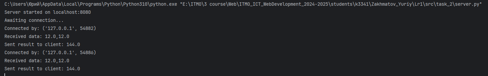
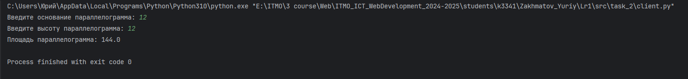

Задание 2
Задание 2:¶
Содержание: Реализовать клиентскую и серверную часть приложения. Клиент запрашивает выполнение математической операции, параметры которой вводятся с клавиатуры. Сервер обрабатывает данные и возвращает результат клиенту.
Требования: Обязательно использовать библиотеку socket. Реализовать с помощью протокола TCP.
Вариант: 8 (Поиск площади параллелограмма)
Выполнение:
- Создаем скрипт для сервера
import socket
def calculate(base, height):
return base * height
def run():
# Создание TCP сокета
server_socket = socket.socket(socket.AF_INET, socket.SOCK_STREAM)
# Задаем параметры
server_address = ("localhost", 8080)
server_socket.bind(server_address)
server_socket.listen(1)
print(f"Server started on {server_address[0]}:{server_address[1]}")
print("Awaiting connection...")
while True:
# Принимаем подключение клиента
client_socket, addr = server_socket.accept()
print(f"Connected by: {addr}")
try:
# Получаем данные от клиента
data = client_socket.recv(1024).decode("utf-8")
print(f"Received data: {data}")
# Преобразуем данные
base, height = map(float, data.split(","))
# Считаем
area = calculate(base,height)
# Отправляем данные
client_socket.send(str(area).encode("utf-8"))
print(f"Sent result to client: {area}")
except Exception as e:
error_msg = f"Error: {e}"
client_socket.send(error_msg.encode("utf-8"))
print(error_msg)
finally:
client_socket.close()
if __name__ == "__main__":
run()
- Создаем скрипт для клиента
import socket
def run():
client_socket = socket.socket(socket.AF_INET, socket.SOCK_STREAM)
client_socket.connect(('localhost', 8080))
try:
base = float(input("Введите основание параллелограмма: "))
height = float(input("Введите высоту параллелограмма: "))
data = f"{base},{height}"
client_socket.send(data.encode('utf-8'))
result = client_socket.recv(1024).decode('utf-8')
print(f"Площадь параллелограмма: {result}")
except Exception as e:
print(f"Ошибка: {e}")
finally:
client_socket.close()
if __name__ == "__main__":
run()
3. Лог сервера (клиент запускался 2 раза)¶
- Лог клиента